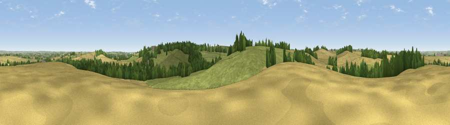

Viewpoint near Cold Overton
#26595 in England · top 35% of its area beats it · near Cold Overton · path 154 mWhere it is
The exact computed spot (SK 80425 11075). Click the marker for map links.
Public access: the nearest public right of way is about 154 m away — the final stretch may cross private land. Computed from Natural England's CRoW access layer and OpenStreetMap rights of way — not the legal definitive map. Always verify locally.
The view, rendered

A 360° render of this exact spot computed from the terrain model, tree cover and land cover — summer colours, afternoon light, calibrated against photographs of famous viewpoints. Real trees, hedges and buildings will differ in detail.
The panorama
Grey silhouette: terrain skyline in each direction (720 bearings, Earth curvature and refraction included). Dashed green: skyline with trees (+15 m) and buildings (+8 m) as obstacles. Blue strip: how far the ground is visible on each bearing.
Where the view opens
Wedge length = distance to the farthest visible ground on that bearing (vegetation-aware). Rings at 10, 25 and 50 km.
What fills the view
53% grassland · 34% cropland · 13% woodland
Angular shares of the visible panorama (visual magnitude), not map area. Landscape diversity 0.43 (0–1 Shannon).
Key numbers
More beautiful places nearby
The staircase of upgrades: each row has a higher view potential than everything closer. Driving times are estimates from straight-line distance, calibrated against real road routing — check an actual route before setting out.
| Place | Direction | Drive | Score |
|---|---|---|---|
| Viewpoint near Cold Overton | SSW · 0 km | ~2 min | 44.5 |
| Ranksborough Hill | E · 2 km | ~5 min | 47.0 |
| Viewpoint near Pickwell | WNW · 3 km | ~8 min | 57.3 |
| Viewpoint near Burrough on the Hill | WNW · 4 km | ~10 min | 63.4 |
| Viewpoint near Burrough on the Hill | WNW · 4 km | ~10 min | 66.0 |
| Viewpoint near Stathern | N · 20 km | ~34 min | 66.3 |
| Viewpoint near Stathern | N · 20 km | ~34 min | 67.2 |
| Viewpoint near Belvoir | N · 22 km | ~37 min | 68.9 |
52.69140, -0.81152 · source: screening · position refined by local search. Computed location — check access rights before visiting.